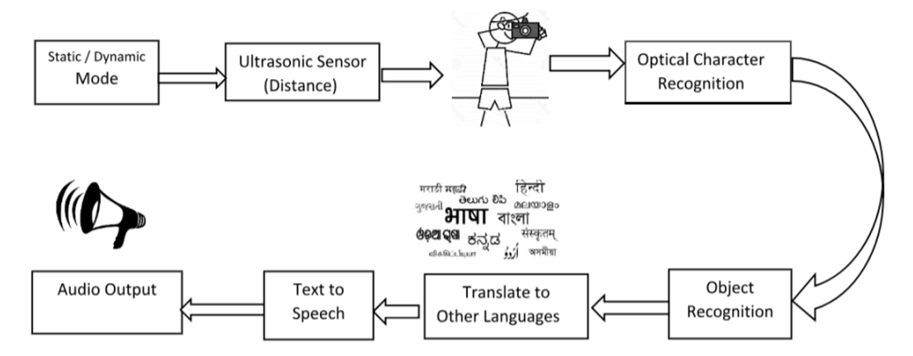

Flow of the Project
The Raspberry Pi system uses the ultrasonic sensors to detect the object, in our case/ problem, it would detect the public transport vehicle like bus or train and let user know the distance. The distance is calculated by the time difference between sensor transmits and receives the ultrasonic waves. These ultrasonic waves travel at speed of sound, approx. 343 m/s. The Raspberry Pi camera module takes the picture of the public transport vehicle within approximate range and passes that still image to object detection and object recognition module. The module here would be responsible for text extraction and saving it to the text file. The OCR (Optical Character Recognition) feature by Google Cloud Vision API is one of the most efficient RESTful API for the application.
Once the image is clicked, it can be stored in the local memory for specific time period and the name of the image is passed on the feature extraction and recognition. The text extracted from the image is then stored in the log file and the output is directed to the user via speaker/ headphones. All the modules mentioned in the above implementation work separately as they can be called as threads.